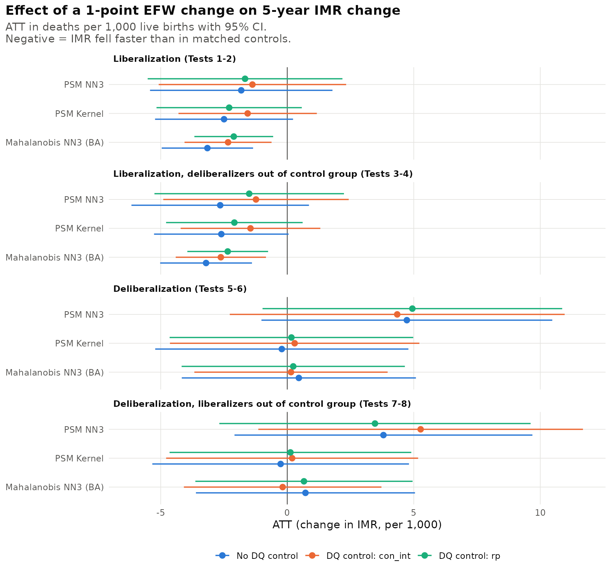
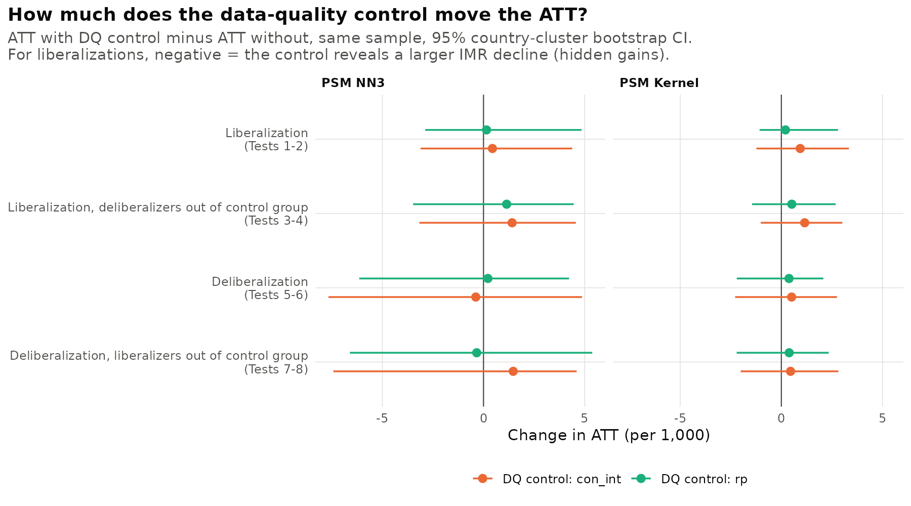
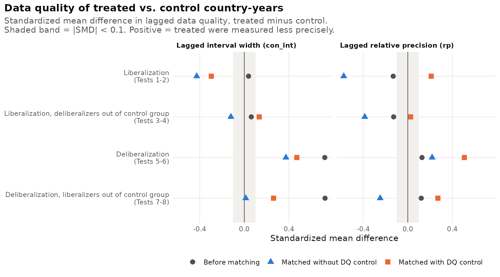
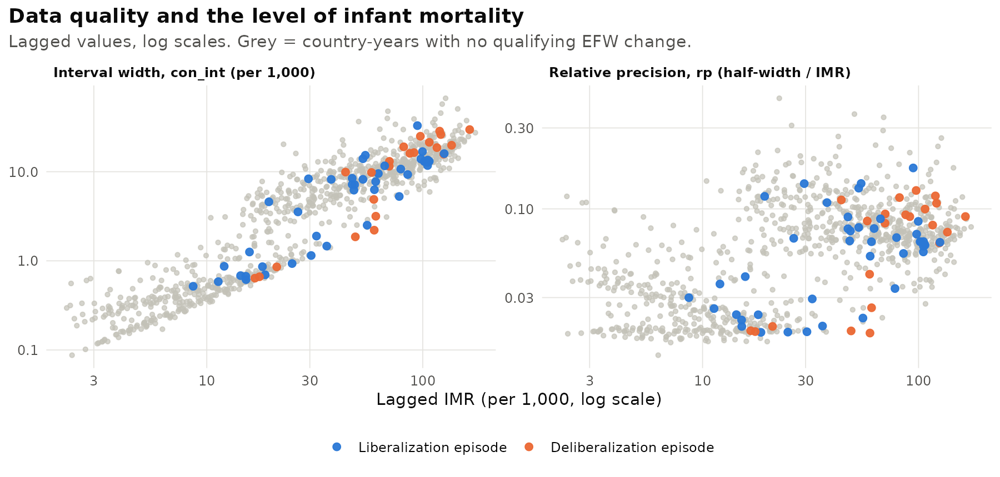

Infant Mortality, Liberalizations and Interventionism: A Causal Analysis Accounting for Data Quality
Preliminary results, Geloso & Wilhelm, 7 October 2026. Data: merged.csv, 1970–2015 quinquennial panel. Code: Code/2) Analysis.R (draft PR #1).
The question
When a country liberalizes, does infant mortality fall faster than it would have, and how much of that answer depends on how well infant mortality is measured? Countries with weak statistical systems have infant mortality series that are largely modelled rather than observed. If liberalizers tend to be measured worse (or better) than the countries they are compared with, part of any measured effect may be an artefact of data quality. Following Vincent's notes, data quality enters only as a control, never as an outcome: we estimate the effect of a large change in economic freedom with and without it and ask how much the estimate moves.
Design
Treatments. A liberalization is a rise of at least 1 point in the Fraser EFW summary index over a 5-year period; a deliberalization is a fall of at least 1 point. Episodes follow Callais & Young (2023): a period is dropped if the previous period or the one before it was an episode, or if the next one is, so the first episode of a sustained reform counts and its follow-on periods do not. That gives 48 liberalizations and 24 deliberalizations (43 and 22 with complete covariates). Liberalizations cluster in 1990–2000 (Nicaragua, Uganda, Argentina, Peru and El Salvador in 1990–95 are the largest); more than half of the deliberalizations are in 1970–75.
Outcome. The 5-year change in the UN IGME infant mortality rate (deaths per 1,000 live births).
Data-quality control. The width of the lagged UN IGME 90% uncertainty interval (con_int, Vincent's preferred measure), and as an alternative its relative precision (rp, half-width divided by the IMR level). Both are measured in the period before treatment, so they cannot be affected by it.
Matching. Treated country-years are matched to untreated ones on lagged EFW, human capital, log GDP per capita and its square, 5-year GDP growth, fertility, old-age dependency, Polity2, urbanization and lagged IMR (the Callais & Young covariates plus the lagged outcome). Three estimators: propensity-score matching with three nearest neighbours (NN3), Epanechnikov kernel propensity-score matching, and Mahalanobis NN3 with Abadie–Imbens bias adjustment. Standard errors for the two propensity-score estimators come from a 200-replication bootstrap that resamples whole countries.
The eight tests. Tests 1–4 treat liberalizations, Tests 5–8 deliberalizations. Even-numbered tests add the data-quality control. Tests 3–4 drop every deliberalization episode from the control group, and Tests 7–8 drop every liberalization episode. Each pair (1–2, 3–4, 5–6, 7–8) is estimated on the same sample, so any gap between the two estimates comes from the control alone, and each bootstrap draw re-estimates both, which gives a standard error for the gap.
Results
1. Liberalizations are followed by faster declines in infant mortality

Figure 1. Average treatment effect on the treated, 95% confidence intervals.
Without the data-quality control (Test 1), infant mortality in liberalizing countries fell by 1.8 to 3.2 more deaths per 1,000 over five years than in matched countries. Over the same period, untreated countries' infant mortality fell by 5.9 per 1,000 on average, so the effect is roughly a third to a half of the typical 5-year decline. The Mahalanobis estimate (−3.16, SE 0.92) is significant at 1%, the kernel estimate (−2.50, SE 1.39) at 10%, and the NN3 estimate (−1.82, SE 1.84) is not significant. Removing deliberalizers from the control group (Test 3) makes the estimates slightly larger (−2.6 to −3.2). A simple regression with year fixed effects and country-clustered errors gives the same picture: −3.36 (SE 0.89).
Deliberalizations (Tests 5–8) show no reliable effect. Point estimates range from −0.3 to +5.3 per 1,000 and none is significant. With 22 episodes, most of them in the early 1970s when IGME estimates are least precise, these tests have little power.
| Test | Treatment | DQ control | PSM NN3 | PSM Kernel | Mahalanobis NN3 |
|---|---|---|---|---|---|
| 1 | Liberalization | none | −1.82 (1.84) | −2.50* (1.39) | −3.16*** (0.92) |
| 2 | Liberalization | con_int |
−1.38 (1.89) | −1.56 (1.39) | −2.34*** (0.88) |
| 3 | Liberalization, no deliberalizers in control group | none | −2.65 (1.79) | −2.61* (1.36) | −3.21*** (0.93) |
| 4 | Liberalization, no deliberalizers in control group | con_int |
−1.24 (1.87) | −1.45 (1.41) | −2.62*** (0.91) |
| 5 | Deliberalization | none | 4.73 (2.93) | −0.22 (2.55) | 0.46 (2.36) |
| 6 | Deliberalization | con_int |
4.35 (3.38) | 0.29 (2.51) | 0.15 (1.95) |
| 7 | Deliberalization, no liberalizers in control group | none | 3.80 (3.00) | −0.26 (2.59) | 0.72 (2.21) |
| 8 | Deliberalization, no liberalizers in control group | con_int |
5.27 (3.27) | 0.19 (2.54) | −0.18 (1.99) |
ATT in deaths per 1,000 over 5 years; standard errors in parentheses. * p<0.10, ** p<0.05, *** p<0.01. Results with rp are in Results/tables/att_all_tests.csv.
2. Data quality is not hiding gains; if anything it slightly inflates them

Figure 2. ATT with the data-quality control minus ATT without, same sample, 95% bootstrap interval.
The pitch of the paper is "how much is data quality hiding gains?" In this sample the answer is none. Adding the interval-width control makes the liberalization effect smaller, not larger: by 0.4 (NN3), 0.9 (kernel) and 0.8 (Mahalanobis) deaths per 1,000 in Tests 1–2, which is 24–37% of the unadjusted estimate, and by 0.6 to 1.4 in Tests 3–4. With relative precision as the control, the shrinkage is 0.2 to 1.0 in Tests 1–2 and 0.5 to 1.1 in Tests 3–4. In the year-fixed-effects regression, the estimate goes from −3.36 to −3.06 (9% smaller). None of these shifts is statistically distinguishable from zero: the bootstrap standard error of the shift is about 1.1 for the kernel estimator and 2.0 for NN3. The Mahalanobis liberalization effect stays significant at 1% with either control (−2.34 with con_int, −2.11 with rp).
For deliberalizations the control moves the estimates by less than 1.5 per 1,000 in either direction, with no consistent sign.
3. Why the estimate moves: liberalizers were measured a little better than their matches

Figure 3. Standardized mean difference in lagged data quality, treated minus control.
Before matching, liberalizers and other country-years have about the same interval width (standardized difference 0.04). Matching on income, demography and lagged IMR, but not on data quality, pairs liberalizers with countries whose intervals were wider (standardized difference −0.43 for con_int, −0.58 for rp). In other words, liberalizers were measured somewhat more precisely than the countries they were compared with. Adding the control narrows that gap, and the estimated effect shrinks accordingly. Our reading (an inference, not something these tests establish) is that IGME series for weakly measured countries are pulled toward a smooth model trend, so the measured declines of poorly measured comparison countries are not directly comparable with those of better-measured liberalizers. For deliberalizers the pattern is the reverse: they were measured much worse than average before matching (standardized difference 0.72), and matching on lagged IMR removes most of that gap.
The propensity-score NN3 estimator does not fully balance data quality even when it is included (standardized difference −0.30 in Test 2). With 43 treated episodes and 11 covariates, the Mahalanobis estimator with bias adjustment is the most reliable of the three, and its results are the steadiest.
4. The two data-quality measures carry different information

Figure 4. Lagged interval width and relative precision against lagged IMR, log scales.
Interval width rises almost one-for-one with the IMR level (correlation 0.83 with lagged IMR in the estimation sample): a country with an IMR of 100 has an interval 30 or more times wider than one with an IMR of 5, even with the same statistical system. Because lagged IMR is already a matching covariate, con_int adds limited independent information. Relative precision is much less tied to the level (correlation 0.31) and is closer to a pure measure of measurement quality, but it becomes noisy where IMR is very low. Vincent's preference for con_int makes the results easy to read in deaths per 1,000; we suggest reporting rp alongside it, since the two tell the same story here.
What this means for the paper
- The headline result holds up. Large liberalizations are followed by infant mortality declines about 2–3 per 1,000 faster over five years, and controlling for data quality does not overturn this.
- The "hidden gains" pitch needs reframing. The IGME interval does not hide gains in 1975–2015; controlling for it trims the estimate by roughly a tenth to a third, and that change is not statistically significant. A more accurate framing: "accounting for data quality, the gains are robust and, if anything, slightly smaller."
- A sharper data-quality measure may change the answer. The IGME interval is mostly a function of the IMR level. The World Bank Statistical Capacity Indicator that Nishant is assembling measures state statistical capacity directly, but it starts in 2004 and most liberalizations happened in the 1990s, so it would mainly help in the 2015–2020 extension.
- Deliberalizations need more episodes. 22 episodes, mostly in the 1970s, cannot identify an effect; the 2020 extension and a 0.75-point threshold would help.
Changes from the May 2026 code
The May code (archived in Code/Archive/Code_2026-05-08/) already set up the eight tests. Revising it changed five things that affect the numbers:
- Episode flags. The May code dropped both periods of a back-to-back reform, so every sustained reformer lost its first episode. The revised flags follow Callais & Young's Stata sequence (48 liberalizations instead of 42, 24 deliberalizations instead of 21). The Venezuela 2000 exclusion never applied in the May code because the country is spelled "Venezuela, RB" in
merged.csv; it now does. - Kernel estimator.
Matching::Match(Weight = 2)is Mahalanobis weighting, not a kernel, so the May "PSM Kernel" column was a second nearest-neighbour estimate. It is now a real Epanechnikov kernel (bandwidth 0.06, thepsmatch2default). - NN3 with replacement, as
psmatch2 ..., n(3)does. - Same sample with and without the control, and a paired, country-clustered bootstrap for the difference.
- Control-group filters now remove every opposite-direction episode, including those blanked by the adjacency rule.
1) Import_Merge.R is unchanged.